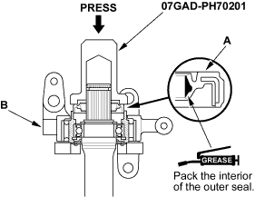
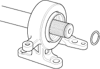
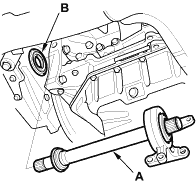
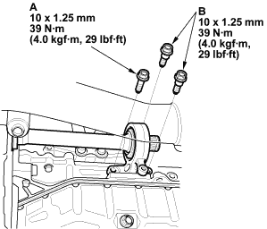

- Install the outer seal (A) into the bearing support (B) using the special tool and a press.

- Install the set ring.


- Use solvent or carburettor cleaner to thoroughly clean the areas where the intermediate shaft (A) contacts the transmission (differential) and dry with compressed air. Insert the intermediate shaft assembly into the differential. Hold the intermediate shaft horizontal to prevent damage to the differential oil seal (B).

- Install the flange bolt (A) and two dowel bolts (B).
